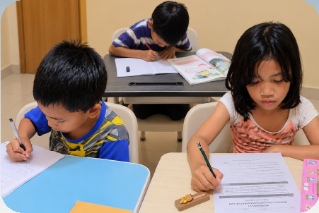
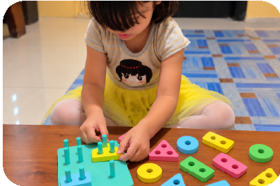
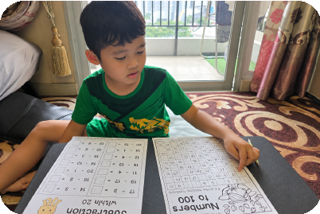
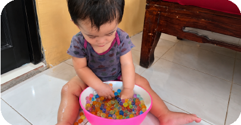
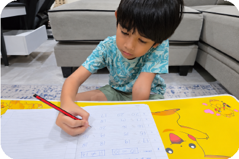
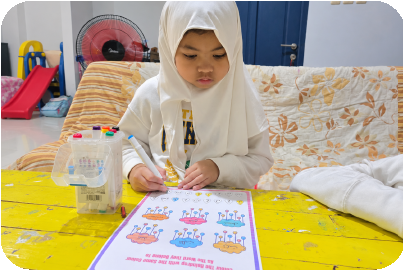

Montessori based
activities
Eksplorasi sensorik dan aktivitas dasar yang menumbuhkan rasa ingin tahu.
Tanya program →✦ PRIVATE LEARNING CLASS FOR CHILDREN
Kelas privat yang hangat, menyenangkan, dan dirancang mengikuti ritme belajar unik setiap anak.
1 anak, 1 guru.
Belajar dengan perhatian penuh.
1× Free Trial Class
Coba kelas pertama tanpa biaya.




✦ TENTANG ALPHA KIDS CLASS
Alpha Kids Class adalah kelas privat interaktif untuk anak usia 1 hingga 12 tahun (Montessori, Pra-sekolah, Calistung, hingga Pendampingan SD). Kami menghadirkan proses belajar personal 1 murid 1 guru yang disesuaikan dengan ritme, minat, dan tahap perkembangan unik setiap anak.
1 murid, 1 guruPerhatian penuh dan metode belajar personal di setiap sesi.
Montessori & AkademisAktivitas eksploratif yang menumbuhkan rasa ingin tahu & percaya diri.
Laporan perkembanganOrang tua selalu tahu perjalanan dan progres belajar si kecil.
Waktu belajar yang fleksibelJadwal belajar dapat disesuaikan dengan kebutuhan & aktivitas si kecil.
✦ PILIH SESUAI USIANYA
Dari eksplorasi pertama hingga persiapan calistung dan pendampingan belajar SD, setiap sesi dibuat khusus untuk kebutuhan anak.
Eksplorasi sensorik dan aktivitas dasar yang menumbuhkan rasa ingin tahu.
Tanya program →✦ MEREKA BELAJAR DI SINI
Belajar adalah pengalaman yang seharusnya menyenangkan. Lihat momen eksplorasi si kecil di Alpha Kids Class.


✦ COBA KELAS PERTAMA!
Coba 1x kelas percobaan untuk mengenali metode belajar privat yang tepat dan nikmati keseruan belajar bersama Alpha Kids Class.
Daftar 1x Free Trial Class →✦ MULAI PERJALANANNYA
Hubungi kami untuk jadwal yang fleksibel atau konsultasi program yang sesuai dengan kebutuhan anak.
Jl. Raya Penggilingan RT006 RW005,
Penggilingan, Cakung, Jakarta Timur